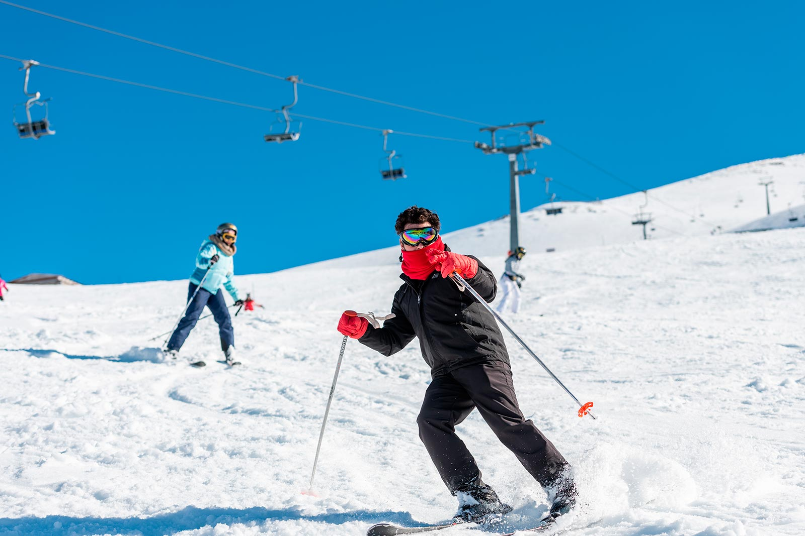

Моё хобби горное катание

Горные лыжи — это захватывающее и популярное хобби, которое сочетает в себе активность, адреналин и контакт с природой. Этот вид спорта включает спуск по снежным склонам на лыжах, что способствует развитию физической формы, улучшению координации и баланса.
Горные лыжи могут быть как зимним видом спорта, так и увлекательным способом наслаждаться зимними пейзажами. Многие горнолыжные курорты предлагают трассы разной сложности, что делает этот вид спорта доступным для людей любого уровня подготовки — от новичков до профессионалов.
Кроме того, горные лыжи способствуют социальным взаимодействиям: многие люди объединяются в группы для катания, что позволяет завести новых знакомых и друзей. Это хобби также способствует укреплению здоровья, так как катание на лыжах задействует множество мышц и улучшает сердечно-сосудистую систему.
Для полноценного опыта важна правильная экипировка, включая лыжи, ботинки и защитное снаряжение. Безопасность и соблюдение правил катания также играют ключевую роль в снижении риска травм.